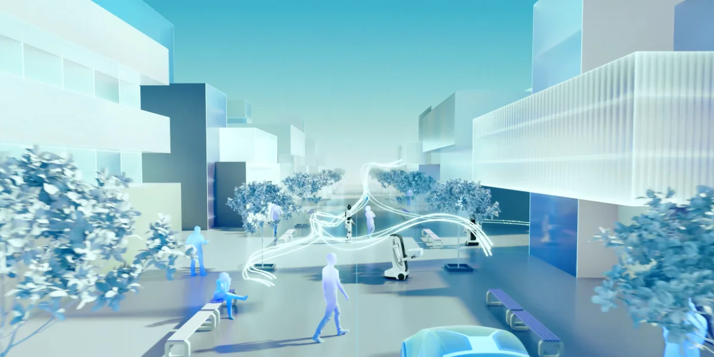

The Constraint
What follows describes the shape of the work in general terms, what I focus on, not what it looks like.
What I Work On
A robotics ecosystem. I lead design for one of Neura's flagship products, a full package spanning digital twin to robot programming, built for the whole chain of people around a robot: users, developers, manufacturers, and integrators.
Autonomy versus control. Defining interaction patterns for cognitive robotics, an area with no established UX language, working with robotics engineers to determine when interfaces should defer to autonomous robot behavior versus give users explicit control.
Neuraverse. Designing high-fidelity interfaces and user flows for Neura's robotics simulation platform, serving both engineers programming precise behavior and end users seeking simple outcomes.

Neuraverse, the global robotics brain connecting people, robots and data.
A design system. Defining the organization's design system, component logic, patterns, and documentation, and supporting other designers working within it. AI-assisted prototyping helps me move faster in places, but the system itself is shaped by design judgment, built and refined over time.
I can't show my own work here, but this video shows what Neura is trying to achieve.
My Role
As Senior UI/UX Designer, I lead the design process for this flagship product end to end, working closely with robotics engineers and product. After fifteen years in ad tech, fintech, and health tech, this is my first chapter in physical AI.